その列車、どこから暗くなるか
日の入りは季節で1時間以上ずれます。12月なら小田原の手前でもう暗く、7月なら名古屋を過ぎてもまだ明るい。東海道新幹線の東京〜新大阪について、乗る日と出発時刻を入れてください。
通過時刻はのぞみ基準の目安です（東京〜新大阪を147分として計算）。停車駅の多い列車や遅れがあるとずれます。日の入りは東海道沿線の平均で近似した簡易計算で、実際の空の明るさは天候にも左右されます。
TONIGHT'S COLOUR
今夜、何色か — 日替わりのライトアップ
照明の色が日によって変わる車窓です。同じ列車に乗っても、乗る日が違えば違う色が見えます。
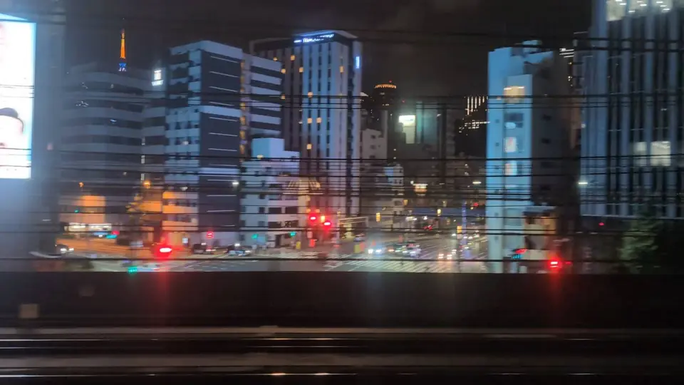
東京タワー
その日の色が決まっている
東京駅を出て3分。ビルの切れ間に、赤い塔が立っています。
東京タワーの照明は毎日同じではありません。通常の「ランドマークライト」は夏が白色、冬が暖色。記念日やイベントの日は「ダイヤモンドヴェール」でピンクや虹色に変わります。乗る日によって色が違う、という意味では、このページで最初に出会う「今日だけの車窓」です。
発車直後で、まだ荷物を片付けている時間帯です。座ってすぐ右を見る、と決めておかないと通り過ぎます。
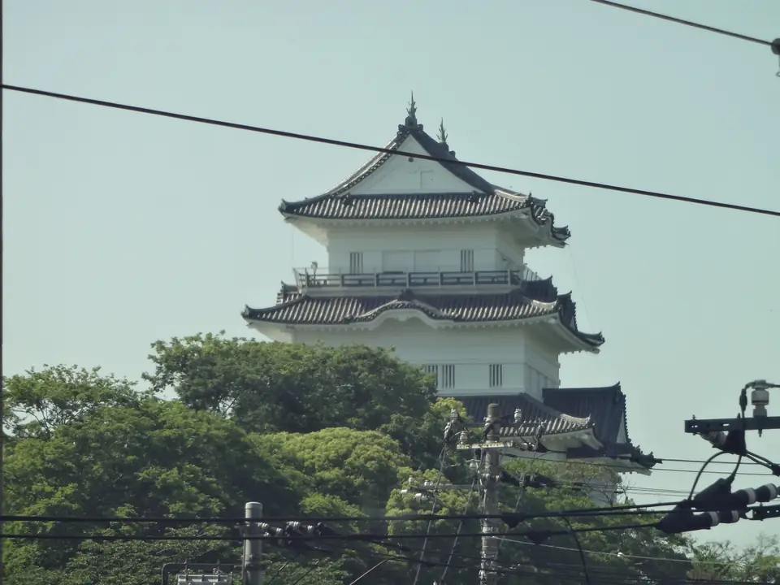
小田原城
その日の色が決まっている
小田原城の天守閣は、公式案内によれば毎日、日没から21時までライトアップされています。さらに、啓発事業などに合わせて色を変える「カラーライトアップ」があり、その月ごとの予定が公式サイトで公開されています。
つまり東京タワーと同じで、その日に何色かが決まっている車窓です。しかもこちらはA席側。東京を出て最初の30分のあいだに、右に東京タワー、左に小田原城と、色の決まった建物が続けて現れることになります。
SEASONAL LIGHT-UP
時期が合えば、城が光る — 期間限定のライトアップ
通年ではなく、季節やイベントに合わせて点灯する城です。日程は年によって変わるので、公式案内へのリンクを置いています。
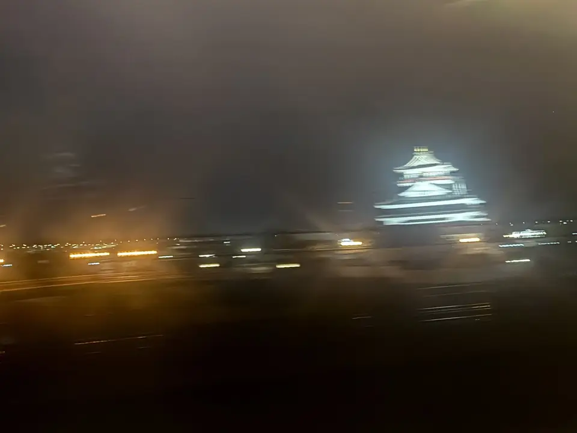
清洲城
期間限定のライトアップ
名古屋を出てすぐ、五条川のそばに朱色の天守が立っています。線路との距離が近く、昼でもよく目立つスポットです。
夜のライトアップは通年ではなく、冬の「きよすイルミ」や春の清洲城桜まつりなど時期を区切って行われます。開催時期は年によって変わるので、公式案内で確認してください。
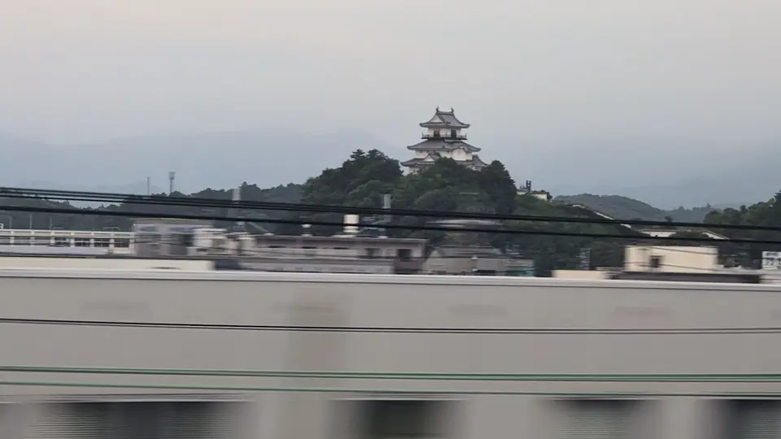
掛川城
期間限定のライトアップ
掛川城は線路のすぐ近くに建っていて、昼はよく見えるスポットです。夜のライトアップは、掛川桜の時期（2月下旬〜3月中旬）や、8月の「水の週間」に合わせた青色の点灯など、期間を区切って行われるものが確認できました。
通年で毎晩点灯しているかどうかは、今回の調べでは一次情報で確認できませんでした。時期が合えば、という前提で公式案内を見てください。
SEA OF LIGHTS
光の海 — 街あかりの夜景
街そのものが車窓になる区間です。昼は建物、夜は明かりの数。
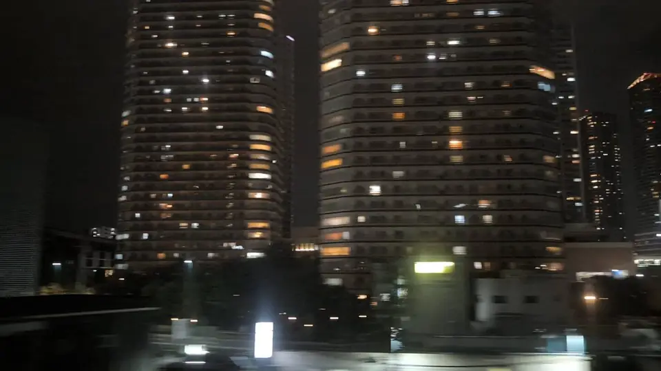
武蔵小杉のタワマン群
窓明かりが積み上がる
多摩川を渡った直後、高層マンションの群れが近づきます。昼はグレーの塊ですが、夜はひとつひとつの窓の明かりが縦に積み上がって見えます。
誰かの生活の数だけ光がある、という見方をすると、同じ建物がまったく違って見えます。
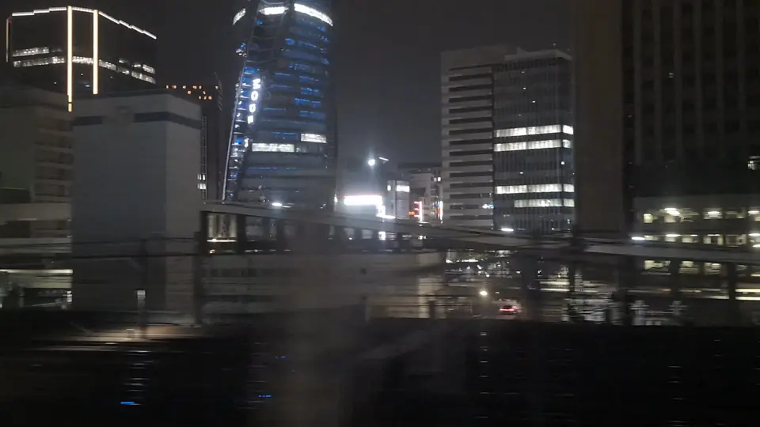
名古屋駅前
光の塊が近づく
名古屋に着く手前、駅前の高層ビル群がまとまった光の塊として近づいてきます。減速しながら近づくので、東京や新大阪の到着前より見ている時間が長く取れます。
降りる人は席を立ちたくなる時間ですが、あと1分だけ窓を見る価値があります。
BETTER AFTER DARK
夜のほうが面白いもの — 定番ではない夜景
観光地の夜景ではありません。昼は素通りしているのに、暗くなると急に主役になるものたちです。
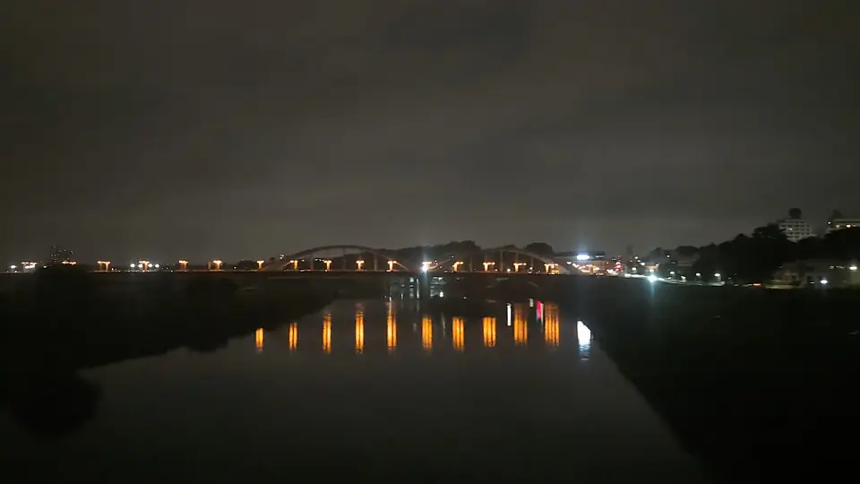
丸子橋
多摩川に伸びる灯り
多摩川を渡る短い時間に、下流側へ橋の灯りが一列に伸びます。昼は川と橋というだけの景色ですが、夜は光の線だけが残ります。
川の上は建物がないので、車窓としては視界がいちばん開けるポイントのひとつです。
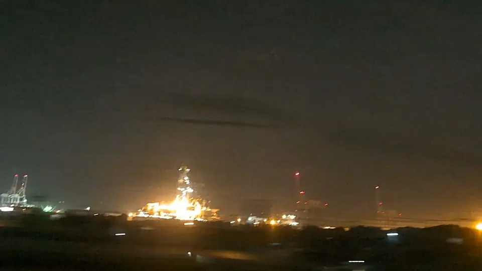
清水港とちきゅう
港の作業灯
海側の遠くに、港の照明がまとまって見えます。停泊していれば地球深部探査船「ちきゅう」の櫓も、細い光の柱として見分けられることがあります。
観光地の夜景ではなく、夜も動いている場所の灯りです。
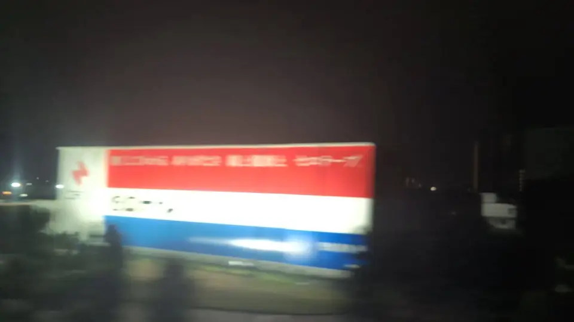
セロテープの壁看板
夜のほうが目立つ
工場の壁に描かれた大きな看板です。昼は壁の一部として流れていきますが、夜は照明が当たって暗闇に文字だけが浮かびます。
昼より夜のほうが見つけやすい、数少ない車窓です。
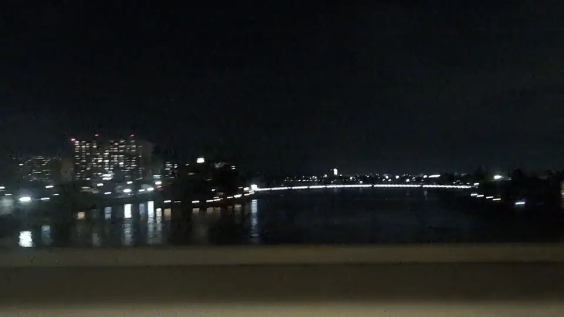
瀬田の唐橋
水面に落ちる光
瀬田川を渡る一瞬に、橋の灯りと、それが水面に落ちた光が見えます。
「唐橋を制する者は天下を制す」と言われた橋ですが、夜はそういう歴史よりも、静かな水面のほうが記憶に残ります。
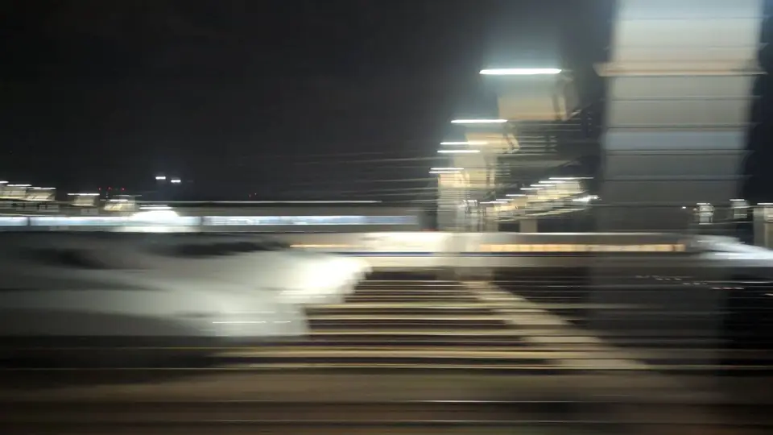
鳥飼車両基地
眠る新幹線の列
新大阪の手前、車両基地に何本もの新幹線が並んで停まっています。夜は照明の下に白い車体が並び、昼とはまったく違う迫力になります。
自分が乗っている車両と同じものが、明かりの中で休んでいる。旅の終わりに見るものとして、これ以上ないと思います。
夜の車窓の見方
ここがこのページでいちばん実用的な部分だと思っています。
- 敵は距離ではなく、車内の照明夜の車窓が見えない原因のほとんどは、外の暗さではなく車内の光の映り込みです。窓は鏡になっています。顔と両手で窓のまわりを囲って影をつくると、数秒で目が慣れて外が見えてきます。座ったまま、周りに気づかれずにできます。
- 暗い席を探すより、影をつくる客室の照明は基本的に落ちません。空いている暗い席を探して移動するより、いま座っている窓に影をつくるほうが確実で早いです。
- 撮るなら、レンズを窓ガラスに密着させるスマホを窓から離すほど車内の光が写り込みます。レンズを直接ガラスに当てると映り込みがほぼ消えます。走行中の夜間撮影はぶれやすいので、まず肉眼で見ておくのが確実です。
- 暗い側と明るい側がある市街地を抜けると、片側だけ真っ暗ということが起こります。E席側とA席側で見えるものが違うので、上の判定で席側も確認してください。
掲載について
ライトアップの実施日・点灯時間・色は、年や事情によって変わります。このページでは日付を断定せず、各施設の公式案内へのリンクを置いています。乗車前に必ず公式でご確認ください。
小田原城と掛川城は、当サイトがまだ夜の車窓写真を持っていません。そのため昼の写真を掲載しています。ライトアップが行われていることと、走行中の新幹線から見えることは別の話なので、「見える」とは書いていません。夜の車窓から撮れた写真をお持ちの方は、お問い合わせからご連絡いただけると助かります。
写真のうち清洲城は @asami_k920 さん、小田原城は @letus10 さんの許諾済み写真です。それ以外は当サイトの撮影です。通過時刻と日の入りはいずれも目安の計算で、実際の見え方は列車・天候・座席位置によって変わります。